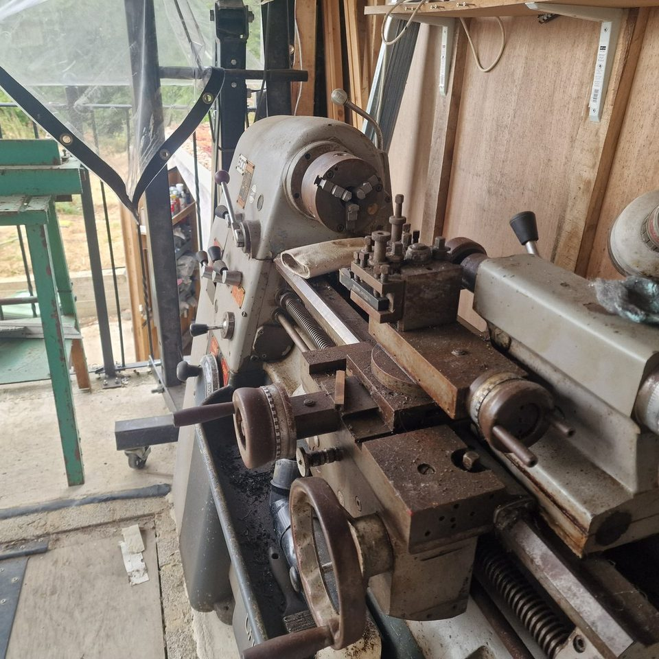
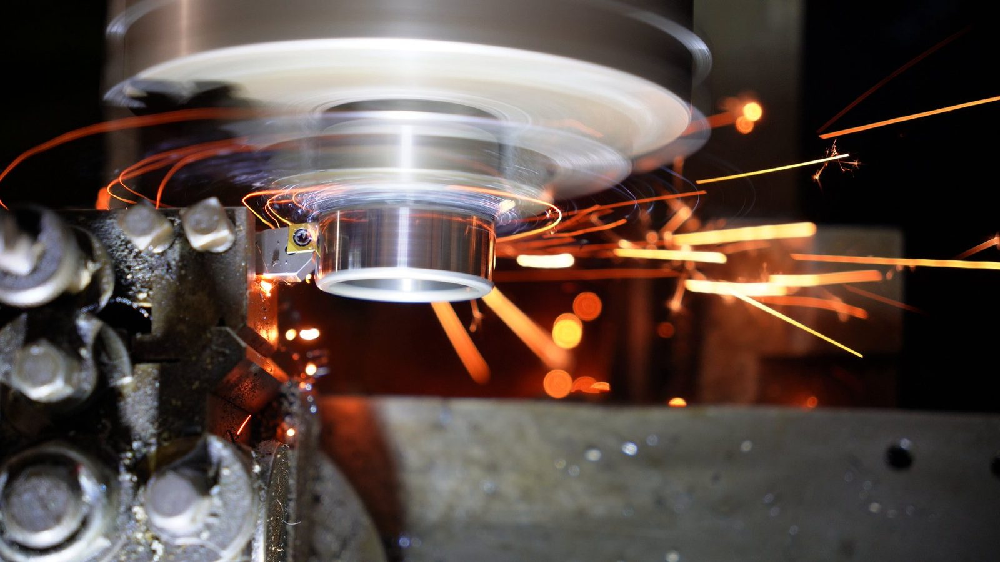

Longer cut
Machining / gratuitous sparks
Lathe Sparks
Hardened steel, CBN insert, old Colchester Chipmaster. Not pretending to be a complicated project page. Mainly sparks. Beautiful, slightly alarming sparks.
And yes, I also have a Myford. Obviously. Who does not need two lathes?
- Machine
- —
- Workpiece
- —
- Tooling
- —
- Speeds and feeds
- —
- Depth of cut
- —
- Why it sparks
- —
Why hardened steel behaves like this
To be written up.
What I would try next
To be written up.
Best clip
The spark ring
Short one, probably the prettiest. Tool cuts, spindle blurs, sparks go into little orange orbits like a small industrial planetarium.
More orange drama
The bigger shower
The setup
Old iron, modern insert
Colchester Chipmaster - proper old British machinery, heavy in all the useful places. Cutting hardened steel with a CBN insert, which is why it looks less like turning and more like fireworks.
The point
None, almost.
There is no lesson here. Posted because I want to, it looks awesome


